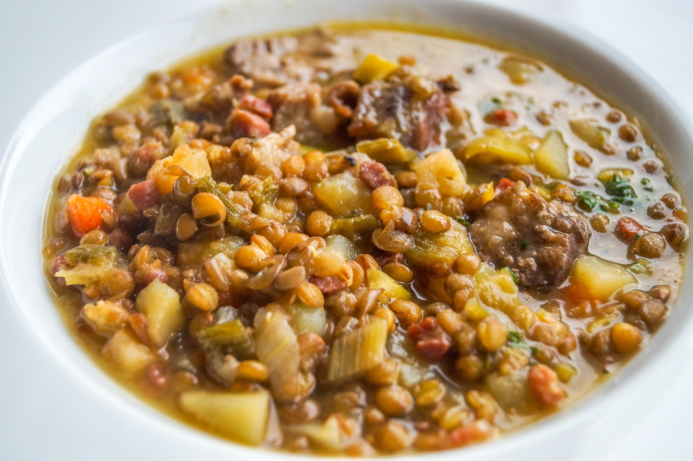

Lentil Soup

Description
Lentils are part of a staple diet in many cultures and used are by many vegetarians as a protein in lieu of meat.
This savory lentil soup will hit the sweet spot on a cold winter night and
Ingredients
- Celery (8 oz)
- Onion (10 oz)
- Fresh Garlic (1 oz)
- Brown Lentils (12 oz)
- Carrots (12 cups)
- ~5 Tbs olive oil
- Broth (veg or chick) (12 cups)
- Potato (460 g)
- Fresh Baby Spinach (to your liking)
- Lemon Juice (25 oz))
- Salt/Pepepr (to taste)
- Cumin (to taste)
- Cayenne Pepper (to taste)
Steps
- Dice onion, celery, carrots, and galic.
- In a large pot, saute vegetables in about 5 Tbs of olive oil until carrots are tender.
- Add broth and lentils to pot
- After bringing soup to boil, turn heat down to medium simmer.
- The soup should simmer until lentils have softened (you may want to begin adding seasoning at this point.
- Add diced potatoes and contine cooking the soup at medium simmer.
- After potatoes are soft, add spinach and lemon juice.
- Continue seasoning to taste while the soup simmers.
- Season/taste until you love it!